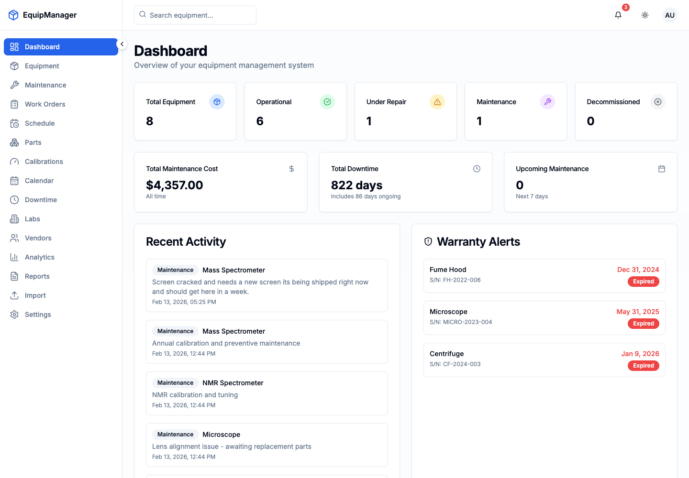
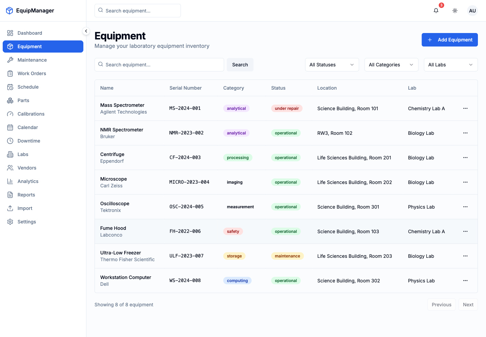

Built For Operations Teams
Designed a dense, work-focused dashboard for teams that need to scan asset status, upcoming maintenance, warranty risk, and recent activity without digging through spreadsheets.
- Equipment inventory
- Maintenance records
- Downtime tracking
- Reports and exports

Product Scope
- Authentication and role-aware dashboard shell
- Equipment records with status, lab, vendor, and warranty data
- Maintenance, calibration, schedule, and work order workflows
- Parts, vendor, document, QR code, and import/export support
Design Focus
The interface prioritizes quick scanning, predictable navigation, clear status labels, and practical tables for repeated daily use.
